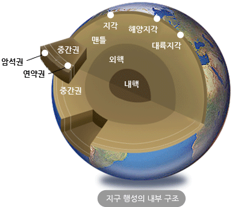

생성원리

지구내부구조
지구내부 구조는 분류 기준에 따라 크게 2가지로 구분하여 나눌 수 있습니다. 지구 내부의 구성성분에 따른 지각, 맨틀, 외핵, 내핵의 고전적 구분법과, 물리적 성질에 따른 암석권, 연약권, 중간권, 핵으로의 현대적 구분법이 있는데, 여기서는 이 2가지 방법을 동시에 적용하여 구분하도록 하겠습니다.

| 고전적분류 | 현대적분류 | ||
|---|---|---|---|
| 지각 | 지각 | 지각 | 암석권 |
| 맨틀 | 상부맨틀 | 최상부 맨틀 | |
| 연약권 | |||
| 전이대 | 중간권 | ||
| 하부맨틀 | |||
| 핵 | 외핵 | 핵 | |
| 내핵 | |||
- - 지표면
- - 35km(모호면)
- - 100km
- - 200km
- - 400km
- - 650km
- - 2900km
- - 5200km
- - 6400km
암석권(지표~100km)
암석과 같이 딱딱한 성질을 지닌 영역을 나타내어, 지표의 대륙/해양지각과 최상부의 맨틀을 포함합니다. 대부분의 맨틀 성질과는 달리 최상부 맨틀은 지표에 가까워 고체의 단단한 성질을 가지기 때문에 암석권에 속하게 됩니다.
지각(지표~35km)
지구의 가장 바깥부분의 지표에 해당되는 부분으로 가장 두께가 얇고, 밀도가 가장 작아 맨틀위에 떠있는 형태입니다. 현무암질의 해양지각은 화강암질의 대륙지각에 비해 밀도가 크고 두께가 얇아 해구에서 대륙지각 아래로 섭입되기도 합니다.
모호로비치치 불연속면(35km 부근)
지각과 맨틀의 경계부로 지진파의 굴절과 속도증가가 크게 나타나는 영역을 말합니다.
최상부 맨틀(35km~100km)
지각과 연약권 사이에 위치한 영역으로 단단하고 거칠어 암석권에 포함된 가장 상부의 맨틀입니다.
맨틀(35km~2900km)
지각과 외핵 사이에 위치한 부분으로 두께가 무려 약 2900km에 달하여, 지구부피의 80%, 질량의 60% 넘게 차지하고 있습니다. 맨틀은 지진파의 속도가 갑자기 빨라지는 전이대(400km~650km)를 기준으로 상부맨틀, 하부맨틀로 나뉘며 연약권과 최상부 맨틀도 여기에 속합니다. S파가 통과해 고체상태이지만 유동성이 큰 물성을 지녀 대류운동을 할 것이라 알려져 있습니다.
연약권(100km~200km)
단단한 성질의 최상부 맨틀 바로 아래 즉, 암석권 아래에 위치한 부드럽고 물성이 있는 부분으로 맨틀대류에 의한 판 이동의 중요한 요인이 되는 영역입니다. 지진파의 속도가 암석권과 연약권 경계부에서 갑자기 감소하는데 이는 연약권의 액체와 비슷한 물리적 성질 때문입니다.
중간권(200km~2900km)
연약권과 핵의 중간영역에 속하며, 높은 열과 압력에 따른 고밀도의 고체상태로 맨틀과 성분을 같이합니다.
외핵(2900km~5200km)
S파가 통과하지 못해 액체상태로 밝혀졌으며, 무거운 철과 니켈의 혼합물이 대부분을 차지합니다. 철은 자성을 가지는데 이러한 철 성분원소들이 지구 전향력에 의해 액체상태로 대류를 하면서 지구 자기장의 형성과 방향에 주된 요인이 됩니다.
내핵(5200km~6400km)
지구 중심에 위치한 고온,고압상태의 영역이며, 원시지구 생성 시 가장 무거운 원소들이 차츰 가라앉아 집적된 곳으로 밀도가 매우 큽니다. 철이 대부분을 차지하며 P파의 속도가 다소 빨라진 결과와 중력수축에 따른 고압의 환경임을 고려해 볼 때 고체상태라 예상됩니다.
원시지구는 커다란 마그마 덩어리로 존재했지만 무거운 물질은 중심으로, 가벼운 물질은 지표부근으로 이동하고 차차 식어감에 따라 각각 특유의 성질을 지닌 양파 껍질과 같은 형태의 내부구조를 가지게 되었습니다. 지구의 내부구조는 지진파의 속도 변화와 진행 특성을 이용하여 분석이 가능해졌는데, 아래 그림과 함께 간략한 설명을 참고바랍니다.
- 만약 지구가 균질하다면 지진파는 직선경로를 따라 일정한 속도로 이동할 것입니다. 하지만 실제 지구는 불균질하기 때문에 내부로 갈수록 밀도, 압력, 온도가 커져 지진파가 굴절하게 되고 속도 또한 빨라지게 되어 그림과 같은 형태로 지진파가 이동하게 됩니다.
- 지진파 중 S파는 액체를 통과하지 못하는 특성이 있습니다. S파를 지구내부로 쏘았을 때 지구내부를 통과하지 못하여 반대편 지표에서 관측이 안 되는 지역이 생기게 되는데 이를 S파-암영대라 합니다. 이러한 암영대의 존재는 곧 지구내부에 액체가 존재함을 뜻하는 중요한 의미를 지닙니다.
- 지진파 중 P파는 액체와 고체 모두 통과할 수 있습니다. P파를 지구내부로 쏘았을 때 액체인 핵에서 1회 크게 굴절을 한 후, 다시 한번의 굴절이 더 일어나게 됨을 관찰하게 됩니다. 이 두 번째 굴절은 P파의 속도가 증가함에 따른 굴절로 액체 내부에 고체상태가 존재함을 뜻합니다. 이러한 두 번의 큰 굴절에 의해 또 다른 암영대가 존재하는데 이를 P파-암영대라 하고, 이를 통해 핵 내부에 고체상태의 내핵이 존재함을 추측할 수 있습니다.